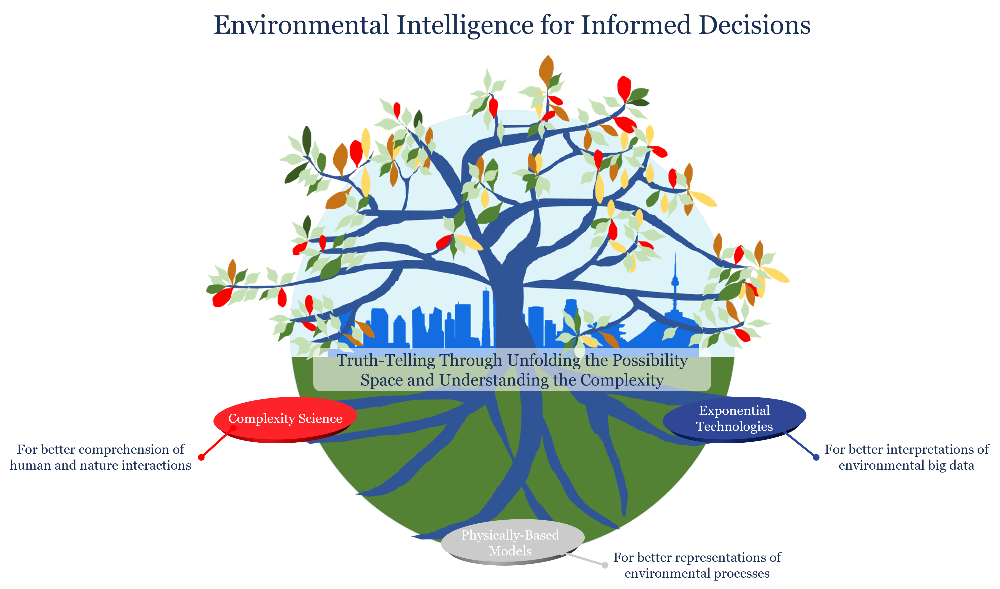

Environmental Intelligence for Informed Decisions
Environmental Intelligence for Informed Decisions. Toward this vision, we pursue Truth-Telling through Unfolding the Possibility Spaces and Understanding the Complexity, grounded in three core pillars: Complexity Science, Physically-Based Models, and Exponential Technologies.
Complexity Science is for better comprehension of human–nature interactions, Physically-Based Models for better representations of environmental processes, and Exponential Technologies for better interpretations of environmental big data.
Albert Einstein once remarked, “Environment is everything.” Our three pillars are not confined to the natural environment alone but also include us—human beings—recognizing that humans and nature are inseparable in addressing today’s global challenges confronting our communities.
News
- Oct 2025 — Lab website rebooted on GitHub Pages.